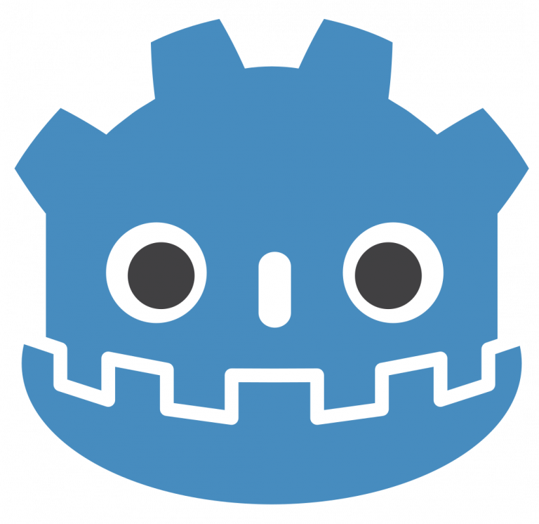
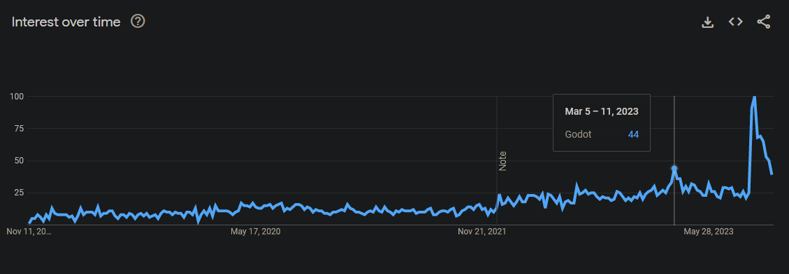
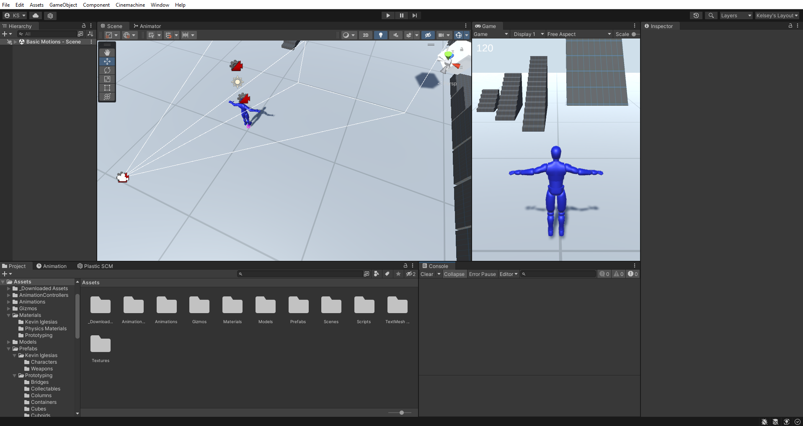

The state of Indie game dev
Whats happened over the last year?
It's been a heck of a time, Godot 4.0 was release and Unity tried to destroy everything.
A lot has happened over the last year, there has been minor developments and major developments. Things have come a long way, but with that there where also set backs. In terms of good news, Godot launched its 4.0 version and gained a bunch of new users, but I gained those new users for a not so great reason. Another game engine, Unity made retroactive changes to their user agreement that would have made it impossible for some game studios to keep their doors open.
Dispite the challenges that showed up, there have still been many sucessful indie game launches over the last year. Names such as Moonstone Island, Dave the Diver, and Sea of Stars probably sound familiar to you by now. Some more detail about those and others will be further down
The Future is Looking Bright For Godot

By Assets: Juan Linietsky, Fernando Miguel Calabró (2018)
Code: Juan Linietsky, Godot Engine contributors (2018-2021),
CC BY 3.0,
Link
It took three years of development, but the highly anticipated Godot 4.0 update released March 1st 2023. A highlight feature for this release is the new Vulkan renderer, with it comes better lighting and higher quality shadows. The new Vulkan renderer is for higher grade hardware systems, while and OpenGL solution was developed for low end and mobile devices. In 4.0 the OpenGL renderer had great 2D support and limited 3D support, but plan to add further support in later updates.
For years Godot has been on an upward trend, but with the release of 4.0 and recent events at Unity they've had two spikes in popularity. More and more people are starting to hear about the Open Source engine and with user trust faiding in corporations, people are seeing Godot as their next best option and in some cases their only option moving forward.

Sourced from Google Trends
Link
It's Time To Talk About the Elephant in the Room

Sourced From my self
The once beloved game engine Unity flew just a little to close to the sun this year. In September 2023, unity anounced that there would be retroactive changes to their Runtime fee. The change that caused most of the problems was that developers would be charged 0.05 cents per install of their game after specified income threshholds where passed. In some cases this would mean developers had to give Unity all the income their game generated.